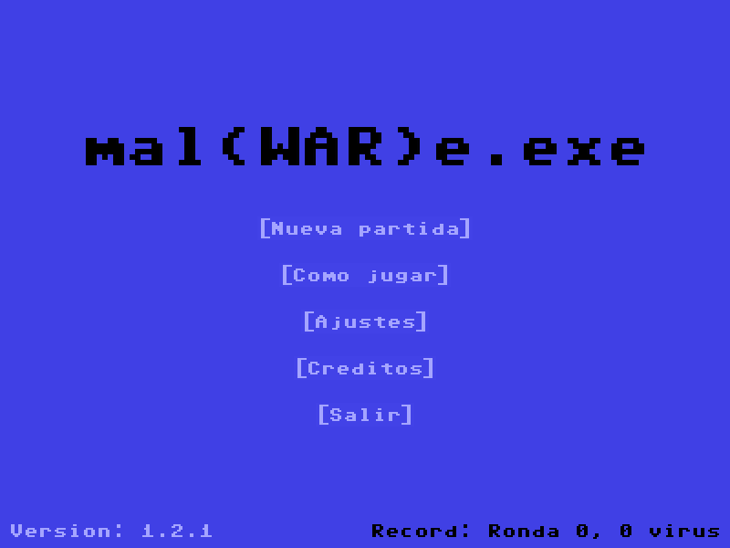
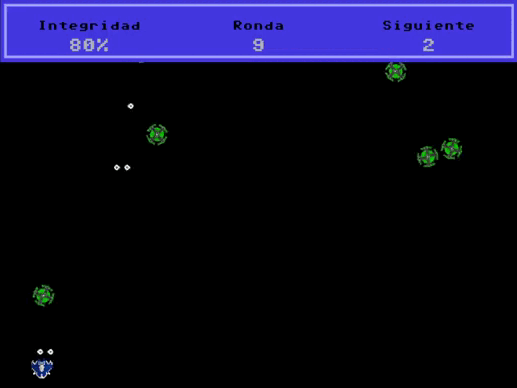

Proyecto
Estaba programado que en la asignatura 'Programación Multimedia y Dispositivos Móviles' usásemos la librería LibGDX para adentrarnos aunque sólo fuese de manera muy superficial en el desarrollo de videouegos, pero finalmente se decidió dar más tiempo al desarrollo con Java para Android.
Debido a mis inquietudes y pasión por la industria del videojuego, decidí que mi proyecto final iría dedicado a introducirme en esa materia/tema que nos quedó pendiente y así fue.
Sin tener conocimiento ni experiencia alguna con la librería LibGDX, me dediqué a indagar, experimentar y finalmente desarrollar lo que sería mi proyecto de fin de curso; un videojuego shoot'em up.
Descripción y contexto
Desde un principio, dada mi inexperiencia con la librería, tenía seguro que el proyecto no podía ser demasiado ambicioso. Por ello decidí crear algo sencillo pero que a su vez hiciese uso de la mayoría de las herramientas que brindaba el motor. El juego cuenta con música de fondo, efectos de sonido, menús, sprites animados, manejo de colisiones, sistema de salud y sistema de guardado tanto para puntuaciones como para los ajustes usuario.

En el juego encarnas a una nave que simboliza el antivirus de un sistema. Durante la partida, varios enemigos (virus) irán intentando acceder al sistema; tu objetivo es evitarlo a base de disparos, como en los viejos tiempos.

Tanto si los disparos enemigos alcanzan la nave como si alguna nave enmiga alcanza la parte inferior de la pantalla, el sistema perderá 'integridad' (salud). Los enemigos van haciendo spawn en la parte superior de la pantalla de manera aleatoria. Cada X enemigos derrotados, se avanza de ronda y tanto enemigos como jugador reciben una mejora (enemigos en verde y jugador en azul) que pueden ir desde más resistencia a los disparos, más daño causado, más velocidad de movimeito, aumento de la cadencia de disparo o velocidad de reaparición en el caso de los enemigos. Ésto da un toque rogue-lite al juego que hace que ninguna partida sea igual. Existe la posibilidad de, al ser derrotados, los enemigos suelten un 'paquete de datos' (salud), si el jugador lo recoge, hará que la integridad del sistema aumente un poco.
AVISO: El siguiente video contiene luces parpadeantes.